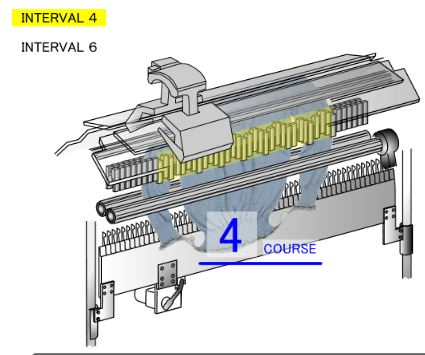
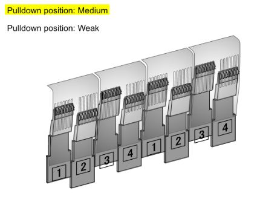
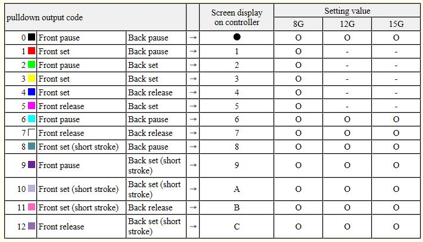

The pulldown device (PDD) is a claw-like device that pulls on the knitted fabric to provide takedown force. It is located between the subroller and the main/exit roller. Each PDD block is 1.5” wide on the MACH2XS. On a 15 gauge machine, each PDD block will span about 23 needles. There are two rows of PDD blocks, one on the back and one on the front.

Yellow highlighted area shows the activated pulldown devices.
Source: SDS-ONE KnitPaint > Help > Lecture Help > 2. Pulldown Device > Interval.
Advantages:
- Can provide effective takedown force because it is quite close to the needle bed gap.
- Can provide differentiated takedown force across the width of the fabric.
Disadvantages:
- The downward-facing pins can puncture silicone tubes.
Mechanism
To pull down the fabric, the PDD tilts towards the fabric. The downward-facing metal pins catch onto the fabric and pull the fabric down.
PDD parameters
Always set the speed of the rotating metal shaft to 1000rpm.
PDD position
“Position” refers to the stroke length of the PDD. A longer stroke length will correspond to greater force.
Stroke length for MACH2XS (not sure about MACH2X):
- Weak: 7mm drop, a spring pulls the PDD up to reduce the drop force.
- Medium: 12mm drop. PDD drops using self-weight.
- Strong: 12mm drop. PDD drops using self-weight plus additional force from an extra spring.
Weak or Medium positions are suitable for most fabrics.
PDD interval
“Interval” refers to the number of courses before the PDD activates. Courses are counted in terms of carriage moves, so a knit cancel course will still count as a course.
To make the pulldown force very weak, on the knitting machine screen, set the box next to the number of courses per interval to “X”. Once the PDD drops to its lowest position, it will pause and will not move or release. This is useful for bind off where many courses/carriage moves are made but hardly any new fabric is created, so you want the PDD to hold the fabric without pulling it down.
The PDD blocks are grouped as sets of 4 blocks. The blocks do not all move at the same time. Instead, they are activated in the following sequence: block 1, block 3, block 2, block 4.

Source: SDS-ONE KnitPaint > Help > Lecture Help > 2. Pulldown Device > Pulldown Position.
Usage notes
Changing the PDD position results in a more marked change in takedown force. Changing the PDD interval results in a more subtle change in takedown force.
Can think of it as:
- “Position” is amplitude.
- “Interval” is wavelength or period.
Option lines
Option lines L10 (knitting) and L11 (transfer)
Typical color numbers:
- Waste knitting after setup: L10= 3, L11= 13.
- Body fabric: L10= 4, L11= 14.
The takedown settings associated with each color number are specified in Knitting Adjust.
For L11, typically specify a weaker setting than L10 since no new fabric is being created.
If carriage system 2 is knitting during a given carriage movement, then the L10 settings will be used even if transfers are done in the same carriage movement.
Option line L16 Pulldown Pattern
The color number on L16 is an index. The actual pulldown pattern for each index is set in Auto Process Parameters > Pulldown tab.

Meaning of each numbered pulldown pattern. Remember that this applies to the number specified in Auto Process Parameters > Pulldown tab, and does not apply to the color number on the developed pattern’s option line.
Source: KnitPaint > Automatic Software Help > MACH2X/MACH2XS > Option Lines > L16: Pulldown Pattern > 1-80.
Meaning of different PDD actions:
- Set: PDD is moving.
- Short stroke means a 12mm PDD stroke.
- Normal set with stroke length 24mm is not supported for MACH2XS 15 gauge, but may be available for other knitting machines (e.g. 8 gauge).- Pause: PDD holds the fabric without moving down, but has a small open-close action at intervals.
- Useful during bind off to prevent fabric from rising and piling up.
- Release/open: PDD opens up so that it is not holding the fabric.
- Pulldown pattern = 7.
- Release may be useful to aid transfers, e.g., when joining a vertically knitted part to a horizontal part (e.g., special neck, joining top of sleeve to shoulder).
- Pause: PDD holds the fabric without moving down, but has a small open-close action at intervals.
Auto Process Parameters Pulldown tab
Pulldown pattern
- Outside set: Outside the knitting area.
- For most fabrics, specify pattern 0 (F/B pause).
- Set: Inside the knitting area.
- Note that “set” here has a different meaning from “set” referring to a PDD action. (Isn’t it confusing?)
- For most fabrics, specify pattern 10 (F/B set short stroke).
- When knitting on only the back (e.g., at the back neckline of a sweater), you may want to use patter 12 (F release, B set short stroke).
Mirror process
- Take down tension is more stable if PDD pattern is symmetrical.
- Every time the number of PDD blocks in use changes, all the PDDs reset to the original uppermost position.
- Without mirror process, the number of times the number of PDD blocks changes is larger, so there are many more PDD resets.
- Don’t make the PDD pattern symmetrical if the knit itself is not symmetrical.
- The line of reflection is where 10 is drawn on the assignment line.
- If you need to knit off-centre, on the assignment line, draw 10 to specify the centre of the needle bed and 110 to specify the line of reflection.
- It is not possible to have multiple lines of reflection in a single knit.
% of output
This specifies when a PDD block will be activated. If x% of the needles within the width of a PDD block are active, then the PDD block will be activated. Typically set to 20%.
Complement and erasing course
When the number of active needles changes, the number of active pulldown blocks may change. Every time the number of active pulldown blocks changes, all the PDD blocks to reset to their original uppermost position. Complement course and erasing course are used to avoid unnecessary PDD block resets.
Complement course
If there are parts of the pulldown pattern visualisation (see Auto Process Parameters > Pulldown tab > Preview) where the number of active PDD blocks decreases for a few courses, KnitPaint can ‘fill in’ the deactivated PDD blocks so that the PDD blocks that would otherwise be deactivated remain active, so that the number of active PDD blocks does not change. The specified number of complement courses indicates the threshold at/below which the 0 courses (i.e., PDD front pause, back pause) will be filled in. The recommended value is 10 courses.
Erasing course
If there are parts of the pulldown pattern visualisation where the number of active PDD blocks increases for a few courses, KnitPaint can ‘erase’ those active PDD blocks so that the number of active PDD blocks does not change. The recommended default threshold is 2 courses.
Shift knit course
This setting takes effect when 249 is used in the developed pattern (e.g., for garments with sleeve and body knitting ranges that slide to connect). Shift Knit Course is used to shift the pulldown pattern upwards by a specified number of courses so that the pulldown pattern specified for a particular course takes effect when that particular course is (approximately) in physical contact with the pulldown device. This is to compensate for the fact that the pulldown device is located some distance below the needle bed gap (where knitting is actually taking place), and the loops have to descend by 100-150 courses before they are actually in contact with the pulldown device.
Knit cancel
This instructs KnitPaint on what pulldown pattern to use when there are idle needles holding loops.
On the package base patterns and developed pattern, typically, specify 255 for needles that are idle but still holding loops so that knit cancel courses are assigned a pulldown pattern.
Alternatively, use 251/ 252/ 253 to specify different pulldown patterns for different areas with idle needles holding loops.
Viewing and manually editing the pulldown pattern
Press the Preview button in Auto Process Parameters > Pulldown tab to view the pulldown pattern visualisation.
I am slightly less confident of these instructions to manually edit the pulldown pattern because I almost never use .tdd files.
- In Automatic Software Settings.
- Select “output pulldown data.”
- Select “auto draw of pulldown open/close” and “open/close 2.”
- Select “auto process pattern development.”
- Press [1,2,3,4] button on right side of KnitPaint screen.
- Data select:
- Mode: Load.
- Opens pattern data and pulldown data as .000 files.
- Mode: Load.
- Data select:
- On the pulldown data, modify the pulldown data manually (e.g., draw “7” to release PDD).
- It is better to make the horizontal extent of your drawing match where the PDD blocks start and end.
- If your drawing doesn’t match, KnitPaint will automatically modify the pulldown pattern data, and you may get unexpected outcomes.
- Use the Composite function to overlap the pattern data and pulldown data to see where to modify the pulldown data.
- It is better to make the horizontal extent of your drawing match where the PDD blocks start and end.
- To save the manual changes:
- Press [1,2,3,4] button.
- Data select: pulldown data.
- Mode: save (normal).
- Knitting machine: (choose your machine model).
- Execute.
- Select pattern area.
- Pulldown is saved as a .tdd file.
- Press [1,2,3,4] button.
- To load the .tdd file on the knitting machine:
- Load .999 file.
- Load .000 file.
- Load .tdd file.
- Load this last to overwrite any pulldown data created during ASS.
- To view .tdd on KnitPaint.
- [1,2,3,4] button.
- Data select: pulldown data.
- Mode: load.
- Dialogue box: Click “data select” then select .tdd file to open.
Tips
Very occasionally, a knit turns out badly because of the position of the fabric relative to the PDD. E.g., the fabric may be positioned so that a few loops on the left side overlap with a PDD block, while the number of loops on the right side are too few to activate the PDD block, causing the left side to have excessive takedown force and the right side to have insufficient takedown force. Shifting the position of the fabric on the needle bed can help to even out the PDD force.